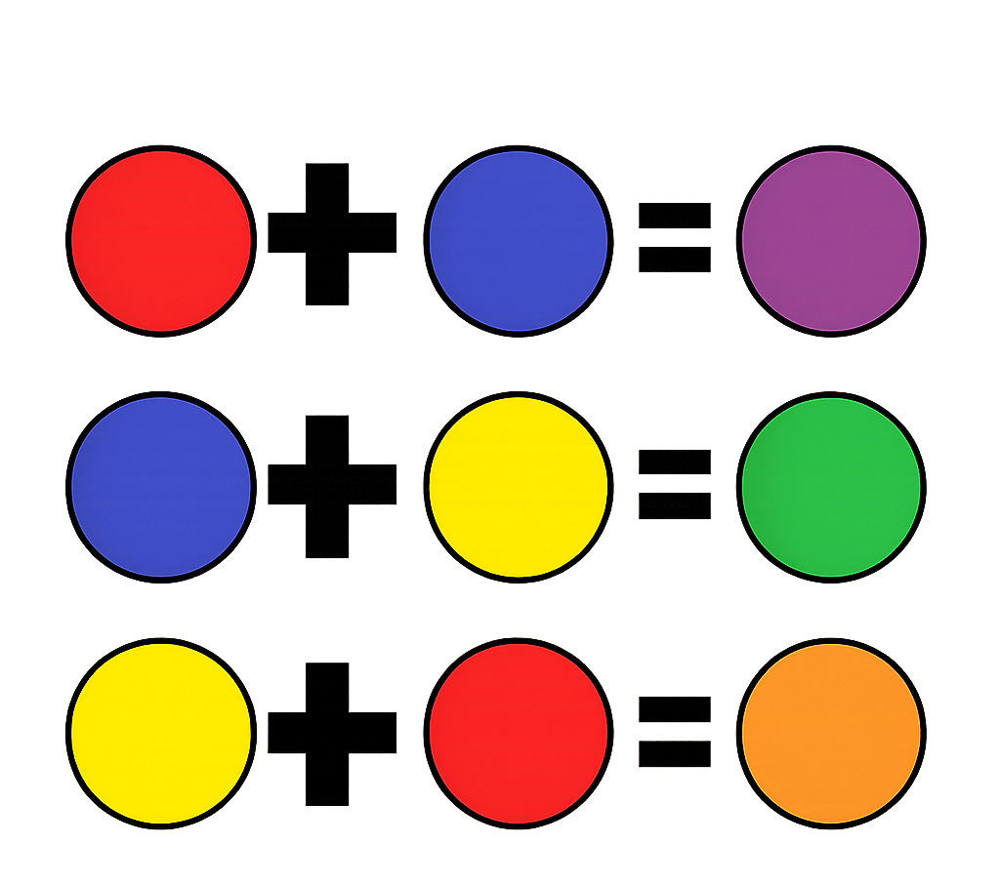
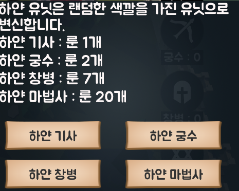

유닛 합성 시스템
기본 유닛 (빨강/파랑/노랑 기사) 조합을 통해 강력한 상위 유닛을 획득하세요!
색 조합하기
빨강, 파랑, 노랑 유닛 기사를 조합하면 보라, 초록, 주황 기사를 얻을 수 있습니다!
다만, 상위 유닛(궁수, 창병, 마법사)은 색상을 합칠 수 없습니다.

상위 유닛 조합하기
궁수 = 3 X 기사
(총 3마리의 기사가 필요합니다)
창병 = 3 X 궁수 + 2 X 기사 (총 11마리의 기사가 필요합니다)
마법사 = 3 X 창병 + 2 X 궁수(총 39마리의 기사가 필요합니다)

특수 유닛(검정/하얀 유닛)

하얀 유닛은 적군의 성 진영에서 룬을 이용해서
구매할 수 있습니다.
하얀 기사 : 룬 1개
하얀 궁수 : 룬 2개
하얀 창병 : 룬 7개
하얀 마법사: 룬 20개
하얀 유닛은 강력한 공격력을 가진 유닛이지만, 지속시간이 존재합니다.
지속시간이 끝나면 하얀 유닛은 빨강,파랑,노랑,보라,초록,주황 유닛 중 하나로 변신합니다.
검정 유닛은 하얀 유닛을 제외한 모든 색깔 유닛 1마리씩으로 조합할 수 있습니다.
검정 유닛과 하얀 유닛은 상위 유닛으로 조합할 수 없습니다.
위로 올라가기